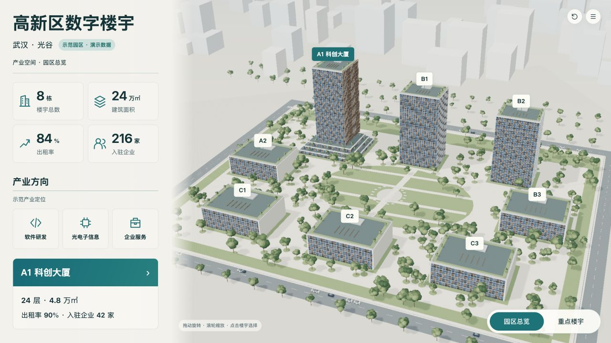
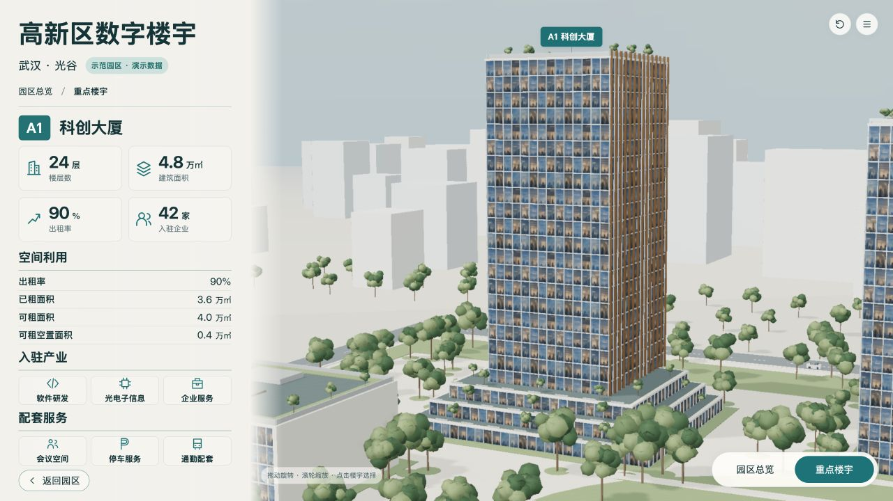

锁定B-campus-v2与B-building-v2r1，不裁切、不拉伸基准；演示快照A1、巡览关闭，固定该版制作相机。新旧版本图片保留。
两图保留原始比例，AI图不具备测绘精度；对照不把AI不可数细节当作工程数据。浏览器截图是实际WebGL画面。



| ID | 预期 | 实际 | 原因假设 | 源修改 | 重建/复验证据 | 结果 | 后续 |
|---|---|---|---|---|---|---|---|
| V-05 | 蓝灰玻璃有窗内层次 | 幕墙已使用规则4×4固定输入贴图，并按层高铺UV | 此前统一PBR颜色缺少细节 | build_scene.py材质节点及按真实分格UV；固定图像哈希进入唯一规划源 | building-detailed-v6.jpg → building-detailed-v7.jpg；design/material-generation-v1.json | 已改善；图中反射为材质细节，不宣称动态实景反射 | 继续以锁定基准比对色彩和尺度 |
| V-08 | 总览A1位于左后排、前排对应布局接近基准 | A1仍偏右，前排整体偏左 | 初始制作坐标与AI投影不吻合 | v9校准同一空间中的楼栋坐标与两层镜头 | campus-detailed-v7.jpg → campus-detailed-v9.jpg | 后续已修正主要偏移 | 不通过修改设计图片掩盖误差 |
[
{
"level": "campus",
"baseline": "design/concepts/B-campus-v2.png",
"baselineSha256": "b7256276a9357e0255ac1799e189de000f3c69563e0672624b826acfb76db264",
"actual": "checks/campus-detailed-v7.jpg",
"actualSha256": "2db1f858d38b288d01e1a4f3d82a0afde9e017290a6d58a1d59100dacea4641f"
},
{
"level": "building",
"baseline": "design/concepts/B-building-v2r1.png",
"baselineSha256": "1aa5b6d94d1b17ae9b7eb815fa59fa75c1f0f44f88a9f2e41045d85aae8f43e4",
"actual": "checks/building-detailed-v7.jpg",
"actualSha256": "ec294d41986a02458b7b58481664010587cada3d2d9e346eefe3c4badbd4ead5"
}
]